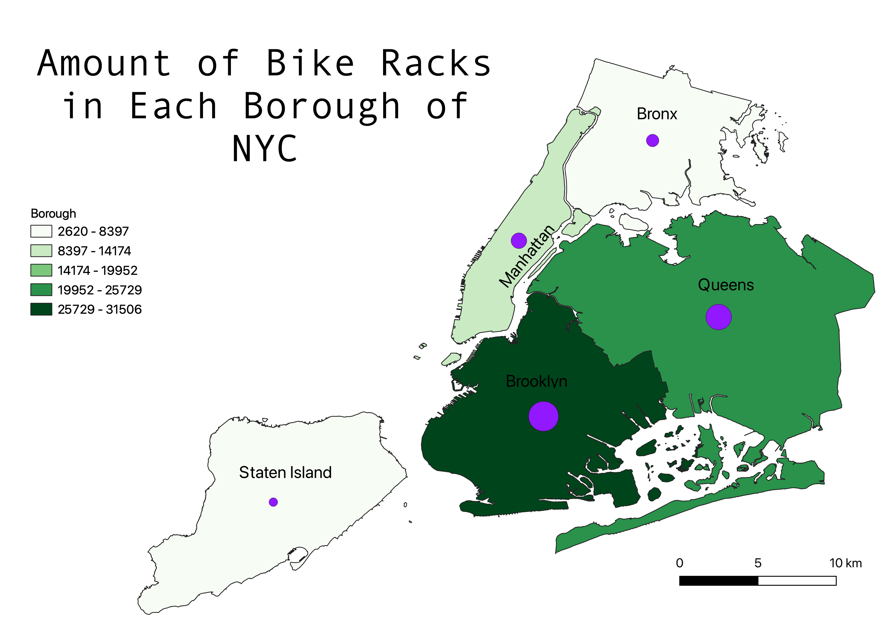

Amount of Bicycle Racks in the New York City Boroughs
This is a map of the amount of bike racks there are in New York City and a Chloropleth ranking the boroughs for most and least amount of bike racks. The proportional symbol(in purple) is a secondary symbol used to compare the amount of bike racks in each borough. As you can see, Brooklyn has the most bike racks of the NYC boroughs.

Data Used for this Project
Link to cleaned csv dataset (GitHub)
Data Used